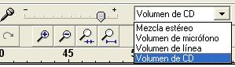
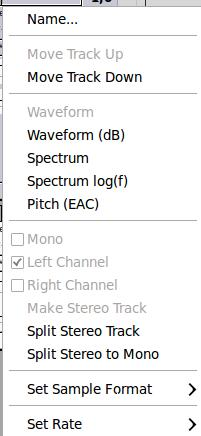

4. Otras herramientas y Línea de Tiempo
Las Herramientas de Medición (A) nos permiten visualizar el volumen de salida de nuestra reprodución y el volumen de entrada a nuestra edición.
El volumen de salida (color verde) muestra la intensidad de volumen de nuestra reprodución hacia un dispositivo de salida (altavoz, auriculares, entre otros). El volumen de entrada (color rojo) registra la intensidad de la entrada de sonido a nuestro editor.
Las herramientas de Mezcla (B) nos permiten definir, tal como lo podemos realizar en preferencias de sonido del sistema, el volumen de los dispositivos de entrada y el volumen de nuestros dispositivos de salida.
La herramienta de Velocidad de Reproducción (C) no está presente en todas las versiones y nos permite reproducir la línea de tiempo a una velocidad determinada (1x=normal, 2x el doble de la normal, etc.).

En algunas distribuciones y, especialmente en las orientadas a Windows, nos permite modificar, en la herramienta de mezcla de entrada, el volumen de cada uno de los dispositivos de entrada que dispone nuestro sistema.
La línea de tiempo y las pistas existentes de nuestro proyecto son el lugar sobre los que vamos a realizar nuestras modificaciones en el proceso de edición. El alumno, ya ha utilizado en otros apartados dichas líneas, es necesario que conozca con mayor detenimiento la función de cada una de las partes.
1. Línea de Tiempo: Esta zona de la pantalla muestra la longitud de la pista. Regularmente, en minutos y segundos.
En la zona inferior de la pantalla podemos definir otras formas de visualizar la línea de tiempo.

En Pistas (tracks) / añadir (Add) podemos eligir diversos tipos de pistas a generar:
- (b) Audio Track: Es una pista de un sólo canal de calidad mono.
- (d) Stereo Track: Pista de dos canales con calidad estéreo.
- (c) Label Track: Son etiquetas que generamos para separar ficheros dentro de un proyecto. Ejemplo: estamos trabajando con más de un fichero y deseamos agregar una etiqueta o una pista de separación que nos distinga cada una de los ficheros importados o pistas adicionales utilizadas.
- (a) Time Track: Una línea de tiempo en nuestra zona de pistas y nos permite medir el tiempo de la línea de tiempo.
Otras propiedades que nos encontramos en las pistas es la posibilidad de ordenarlas dentro de nuestra línea de tiempo. Hacemos clic en la pestaña derecha de la pista y se nos despliega el submenú de propiedades. Podemos mover hacia arriba (Move track Up) o Abajo (Move Track Down).
3. Scrubber: Una flecha verde cuando utilizamos el botón Reproducir, marca la zona (los segundos) en la que se va desplazando. Al pinchar en cualquier zona de la línea de tiempo, el scrubber lo desplazamos a ese segundo de reproducción.
Este término se utiliza en programas de mezclas de DJ (pinchadiscos) para aumentar y disminuir la velocidad.
4. Canal izquierdo de la forma de onda del audio (pistas estéreo)
5. Canal derecho de la forma de onda del audio (pistas estéreo)
Jo.R.C.A. 2004 - 2011

Edición de Audio y Video con Software Libre by José Ramón Cerdeira Alonso is licensed under a Creative Commons Reconocimiento-No comercial-Compartir bajo la misma licencia 3.0 España License